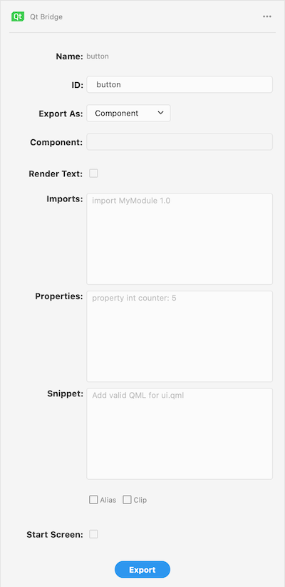
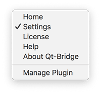
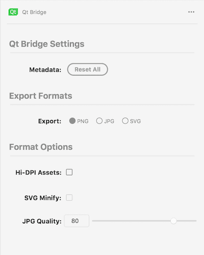

Using Qt Bridge for Adobe XD
Organizing Assets
To get the best results when you use Qt Bridge for Adobe XD to export designs from Adobe XD to Qt Design Studio, follow these guidelines when working with Adobe XD:
- Arrange your design into artboards and organize it into groups and layers that are imported into Qt Design Studio as separate files.
- Use descriptive and unique IDs to avoid duplicate asset names and IDs in the generated UI.
- Use XD Components and instances to reuse the UI elements.
Note: Although Qt Bridge for Adobe XD preserves the XD Component and instance's relationship, overrides and states are not yet supported.
To use the fonts that you use in Adobe XD also in Qt Design Studio, you need to import them to Qt Design Studio as assets. Qt Design Studio deploys them to devices when you preview the UI. For more information, see Using Custom Fonts.
Supported Design Elements
You can export the following parts of your design using Qt Bridge for Adobe XD:
- Artboard
- Group
- Shapes (Rectangle, Ellipse, Polygon, Line, Pen)
- Text
The following design elements might not be exported as expected.
- Component states
- Component overrides
- Prototype
- Repeat Grid
Note: Adobe XD's plugin API support is incomplete. Specifically, the support for XD Components is limited. This might change in the future and Qt Bridge for Adobe XD might extend the XD Component support.
Using Artboards
The hierarchical relationships between artboards and layers are preserved when you export designs from Adobe XD and import them into Qt Design Studio. The relationships are the basis of how the Items are organized in the generated code in Qt Design Studio.
An artboard can only be exported as a component or skipped. A component will be imported as a separate file that contains the artwork and text on the artboard.
Annotate Layers for Export
With Qt Bridge for Adobe XD, layers can be annotated to hint how each layer or group must be exported. The {Home} panel displays and allows layer annotation for export:

- Qt Bridge for Adobe XD automatically proposes identifiers for all groups and layers that you can change in the ID field. Use unique and descriptive IDs to avoid duplicate IDs when the layer and the respective artwork is imported into Qt Design Studio. Even though the importer in Qt Design Studio is capable of fixing duplicate IDs, doing so will generate warnings. It is recommend that you should manually check all the IDs to make them unique and descriptive.
- In the Export As field, select the export type for the group or layer:
- Component exports the layer as a separate UI file that contains all the exportable artwork and text in it. Only Artboards and XD component layers can be exported as components.
- Child exports each asset of the selected group or layer a separate PNG file, with references to the images in the component file.
- Merged merges the rendition of the selected groups and layers into the rendition of parent artboard or group as one item.
- Skipped completely skips the selected layer.
- In the Component field, specify the component or Qt Quick Studio Component to morph this layer into. The component that is generated during import will be of this type. For example, if you drew a rectangle, you can export it as a Rectangle component. You can provide the import statement of the module where the component is defined in the Imports field.
Note: The implicit properties except position and size are not applied when the Component is defined. For example, all text properties will be ignored if Component is defined for a text layer, but explicit properties defined in the Properties field will be applied.
- Select the Render Text check box to render the text layer as an image
- In the Imports field, enter additional import statements to have them added to the generated code file. For example, to use Qt Quick Controls 2.3, you need the import statement
QtQuick.Controls 2.3and to use Qt Quick Studio Components 1.0, you need the import statementQtQuick.Studio.Components 1.0. You can also import a module as an alias. - In the Properties field, specify new properties or assign values to the existing properties of the component. You can also add and modify properties in Qt Design Studio. The following are a few examples of the properties:
property int counter: 5 property string label: "ok" antialiasing : true width: parent.width / 2
To remove a property, write a "dash" (-) followed by the "property name". For example:
- widthwill remove the property width from the generated code.
- In the Snippet field, specify component to be added as child under this component. Following example adds a Connection component:
Connections { target: myItem onVisibleChanged: console.log(original_Text.visible) }Note: The code must have a scope of a component(e.g. Item, MouseArea, Connections etc.) with a valid syntax for UI Files.
Note: Add respective imports for your snippet in Imports.
- Select the Clip check box to enable clipping in the component generated from the layer. The generated component will clip its own painting, as well as the painting of its children, to its bounding rectangle.
- Select the Visible check box to determine the visibility of the layer in the generated UI in Qt Design Studio.
- Select the Start Screen check box to set the selected component as the start component.
- Select Export to launch the export dialog to export the document into a .qtbridge archive.
Note: XD Components can not be skipped and Text layers can only be merged when Render Text is selected.
Export Defaults
Qt Bridge for Adobe XD assigns the following defaults to the layers:
By default:
- Artboards and XD Components are exported as components.
- Component instances, Text layers and immediate children of an Artboard are exported as child.
- Any layer not falling under the aforementioned criteria is exported as merged.
- Images are exported as PNGs by default with no Hi-DPI images.
- Visible is set to
true.
All the assets and metadata are copied to the directory you specified. This might take a little while depending on the complexity of your project.
You can now create a project in Qt Design Studio and import the assets to it, as described in Creating Projects and Importing Designs.
Qt Bridge for Adobe XD Settings
Select Settings to change the export settings.


- Select Reset All to remove all of the Qt Bridge data stored in the document. Use Edit > Undo to restore the data if you accidentally removed it.
- You can export images into PNG, JPG or SVG format. In the section Export Formats, select the image format to export.
- Depending on the image format selected for export, the Format Options allows fine tuning the exported image.
- Select Hi-DPI Assets to generate Hi-DPI images alongside normal scale images. Being a vector format, this option is not available for SVG format.
- Select SVG Minify to minify the SVG.
- Select JPG Quality to specify the JPG compression quality in the range [1, 100].
Suggestions and Tips
You can export assets using the default settings and make all the changes later in Qt Design Studio. If you are familiar with the QML syntax, you can modify the settings to tailor the generated code to a certain degree. For example, you can specify the component or Qt Quick Studio Component to use for a component or layer. If you have drawn an arc that you mean to animate, you can export it as an Arc component to avoid having to replace the arc image with an Arc component in Qt Design Studio. Or you could export a button as a Qt Quick Controls Button component.
- Name the layers in exactly the same way as your IDs, to be able to find artwork later, especially as the export files can grow very large and complicated as they approach the level of a complete UI project.
- Make sure to skip all artboards that you don't want to be part of the final UI to avoid cluttering the Qt Design Studio project. You can select multiple artboards on a page and then select Skip in Qt Bridge for Adobe XD to skip them.
- Store all assets in the scalable vector graphics (SVG) format to be able to easily rescale them for different screen sizes and resolutions. You can export assets into JPG, PNG, or SVG format and select options for optimizing them during the export.